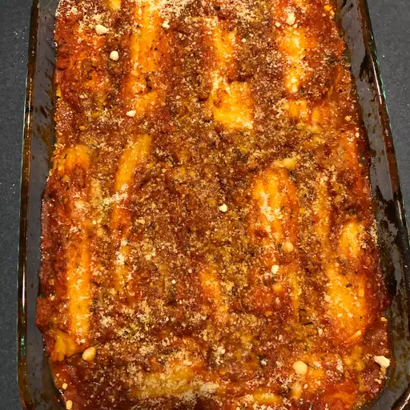

Manicotti

Description
This manicotti recipe makes for a comforting family dinner. Consider serving with a crispy salad and garlic bread.
Ingredients
- Pasta: Can use store-bought or homemade manicotti pasta shells.
- Cheeses: Stuff the manicotti with a rich mixture of ricotta, mozzarella, and Parmesan cheeses.
- Eggs: Two eggs lend moisture and help bind the filling together.
- Seasonings: The manicotti recipe is seasoned with dried parsley, salt, and ground black pepper.
Steps
- Boil and drain the manicotti.
- Make the filling and spread sauce in the bottom of a baking dish.
- Stuff the shells and arrange them over the sauce.
- Pour the remaining sauce over the shells and sprinkle with Parmesan.
- Bake the manicotti until bubbly.